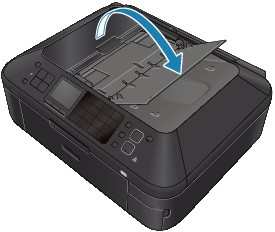
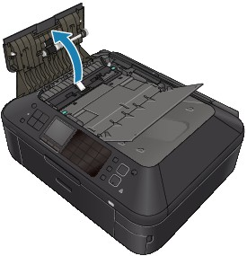
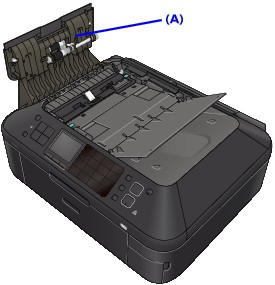

Important
Important-
Be sure to turn off the power and unplug the power cord before cleaning the machine.
-
The power cannot be turned off while the machine is sending or receiving a fax, or when the received fax or unsent fax are stored in the machine's memory. Make sure if the machine completed sending or receiving all the faxes before disconnecting the power cord.
-
The machine cannot send or receive faxes when the power is turned off.
-
If you unplug the power cord, all the faxes stored in the machine's memory will be deleted.
Print the necessary faxes or save them to the memory card/USB flash drive before unplugging the power cord.
-
-
Open the Document Tray.
 -
Open the Document Feeder Cover.
 -
With a soft, clean, lint-free and dry cloth, wipe off any paper dust from the inside of the Document Feeder Cover (A).
 -
After wiping, close the Document Feeder Cover by pushing it until it clicks into place.
-
Close the Document Tray.